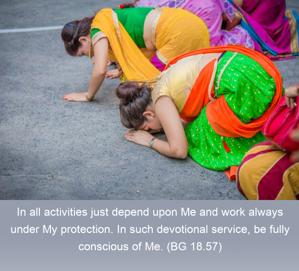
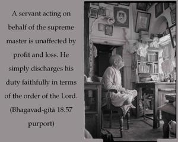

In all activities just depend upon Me and work always under My protection. In such devotional service, be fully conscious of Me.


When one acts in Kṛṣṇa consciousness, he does not act as the master of the world. Just like a servant, one should act fully under the direction of the Supreme Lord. A servant has no individual independence. He acts only on the order of the master. A servant acting on behalf of the supreme master is unaffected by profit and loss. He simply discharges his duty faithfully in terms of the order of the Lord. Now, one may argue that Arjuna was acting under the personal direction of Kṛṣṇa but when Kṛṣṇa is not present how should one act? If one acts according to the direction of Kṛṣṇa in this book, as well as under the guidance of the representative of Kṛṣṇa, then the result will be the same. The Sanskrit word mat-paraḥ is very important in this verse. It indicates that one has no goal in life save and except acting in Kṛṣṇa consciousness just to satisfy Kṛṣṇa. And while working in that way, one should think of Kṛṣṇa only: “I have been appointed to discharge this particular duty by Kṛṣṇa.” While acting in such a way, one naturally has to think of Kṛṣṇa. This is perfect Kṛṣṇa consciousness. One should, however, note that after doing something whimsically he should not offer the result to the Supreme Lord. That sort of duty is not in the devotional service of Kṛṣṇa consciousness. One should act according to the order of Kṛṣṇa. This is a very important point. That order of Kṛṣṇa comes through disciplic succession from the bona fide spiritual master. Therefore the spiritual master’s order should be taken as the prime duty of life. If one gets a bona fide spiritual master and acts according to his direction, then one’s perfection of life in Kṛṣṇa consciousness is guaranteed.